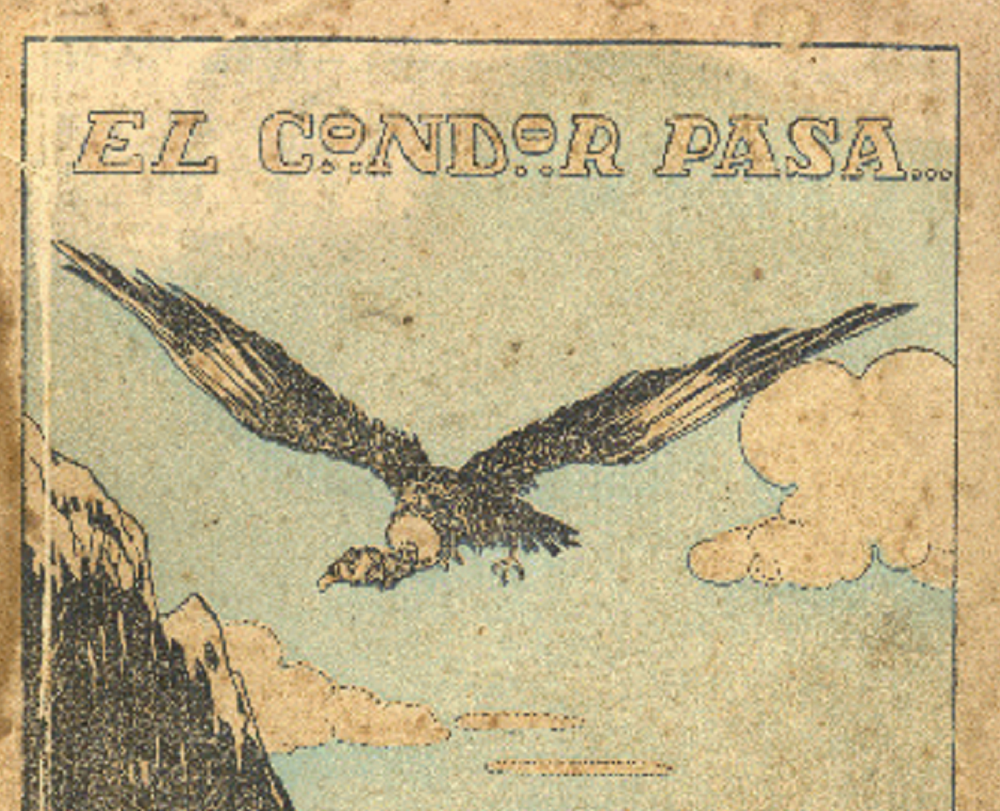

El cóndor pasa
Apunte 010
Inicio > Blog Bitácora de un músico > Apunte 010
De zarzuela a motivo global
En diciembre de 1913, Daniel Alomía Robles estrenó en Lima una zarzuela en un acto titulada El cóndor pasa. No era una canción en el sentido moderno. Era una obra teatral: voces que dialogaban, una orquesta que creaba tensión y una narración escenificada ambientada en un entorno minero de los Andes peruanos.
La música, en ese contexto, no flotaba libremente. Estaba ligada a la acción. Aparecía en momentos específicos, tenía un peso emocional porque estaba anclada a personajes y situaciones, y se disolvía de nuevo en el flujo dramático.
La melodía del mismo título, que más tarde se haría famosa, formaba parte de esa maquinaria. No existía como un objeto independiente. Tenía un papel, una posición, una razón de ser.
Lo que circula hoy carece de eso.
Origen melódico y transformación temprana
Antes de que se extrajera nada, algo ya había sido alterado.
Alomía Robles trabajaba dentro de una corriente más amplia de principios del siglo XX que buscaba traducir materiales musicales indígenas a formas que pudieran funcionar dentro de la vida artística nacional y urbana. No se trataba de un acto neutral de recopilación. Requería moldear, seleccionar, adaptar. Y también extraer. Significaba adaptar el material musical para que pudiera integrarse en una estructura diferente.
La conexión con Huk urpichatam uywakurqani, una canción tradicional quechua de la región de Jauja, generalmente traducida como "Crié una palomita" y asociada con el repertorio íntimo y melancólico de tipo yaraví o harawi, suele invocarse como prueba de origen. Pero se trata más bien de un punto de fricción. Una melodía pasa por un sistema que la modifica lo suficiente como para comportarse de manera diferente. Lo que emerge no es un fragmento de tradición preservado, sino algo ya reconfigurado.
Para cuando entra en la zarzuela, lleva consigo una nueva lógica.
Extracción y recomposición
Entonces llega la ruptura decisiva.
En algún momento de mediados del siglo XX, la melodía se extrae de la zarzuela. No se la cita, no se alude a ella, simplemente se la elimina. Se desvincula de la secuencia dramática que le daba dirección y significado.
Una vez separada, cambia. Es inevitable. Sin la estructura que la sustentaba, la melodía se vuelve más ligera, más compacta, más fácil de repetir. La complejidad armónica se reduce, la forma se afianza, la duración se acorta. Lo que queda no es una "versión simplificada" del original. Es un objeto diferente.
Es un fragmento concebido para el movimiento.
La zarzuela permanece inmóvil. El fragmento se desplaza.
Reorquestación y la construcción del "sonido andino".
A medida que la melodía se desplaza, adquiere un nuevo cuerpo.
Los arreglos comienzan a favorecer a las quenas, los charangos y las guitarras. La respiración reemplaza la densidad orquestal. Las cuerdas pulsadas reemplazan la superposición armónica. El sonido se vuelve escaso, abierto, reconocible. Esta es la versión que la mayoría de los oyentes identifican ahora como "auténticamente andina".
Pero este sonido no estaba latente en la obra original, listo para ser descubierto. Se fue construyendo posteriormente, gradualmente, hasta que se volvió lo suficientemente familiar como para funcionar como un sello distintivo. La melodía se asienta en ese marco, y con el tiempo, el marco comienza a sentirse inevitable.
Lo que se percibe como autenticidad a menudo no es más que repetición que cuaja en expectativa.
Circulación global
A finales de la década de 1950 y durante la de 1960, la melodía ya se había estabilizado gracias al trabajo de grupos como Los Incas, cuyos arreglos fijaron el sonido ahora familiar: la quena en primer plano, el charango y la guitarra acompañándola, un desarrollo lento que transformó la melodía en algo íntimo y expansivo a la vez. Esto no fue solo interpretación. Fue consolidación. El fragmento encontró una forma que podía viajar sin perder coherencia.
Cuando Simon & Garfunkel lanzaron El Cóndor Pasa (If I Could) en 1970, no recurrieron a la zarzuela original. Tomaron esta versión ya consolidada y la desarrollaron aún más. En ese momento, la melodía ya no necesitaba su pasado. Ya no requería la narrativa minera, el marco teatral, ni siquiera un contexto geográfico preciso.
Transmitía una atmósfera. Un horizonte. Una vaga pero poderosa sensación de altitud, distancia y memoria.
El fragmento se había vuelto autosuficiente.
Reconstrucción de archivo y los límites del retorno
Un siglo después del estreno, Luis Alberto Salazar Mejía reconstruyó la zarzuela original a partir de manuscritos conservados en archivo y la llevó de nuevo a los escenarios. La orquestación reapareció. Las voces regresaron. La estructura, largamente oculta, volvió a ser audible.
Pero algo había cambiado.
La obra restaurada no se sentía como la versión "real" reclamando su lugar. Se sentía casi desconocida, como si fuera una variación. El fragmento ya había ocupado el lugar de origen en el oído global. Se había arraigado demasiado.
El archivo puede revelar las capas. No puede deshacerlas.
Lo que realmente sobrevivió
A menudo imaginamos que la música viaja intacta, llevando consigo su historia.
No es así.
Lo que viaja son fragmentos que pueden sobrevivir al ser separados. Fragmentos que pueden ser remodelados sin romperse. Fragmentos que se adaptan fácilmente a nuevos contextos, a nuevos oídos, a nuevas expectativas.
El cóndor pasa no se extendió por todo el mundo como obra teatral. Lo hizo un fragmento. Y sobrevivió precisamente porque pudo separarse, simplificarse y unirse a otra cosa.
El sonido que creemos conocer
Hoy, cuando se toca la melodía, se siente inmediata. Familiar. Casi inevitable. Como si siempre hubiera existido en esa forma.
Pero lo que oímos no es un comienzo. Es el final de una larga secuencia de transformaciones que han borrado sus propias huellas. La melodía suena completa porque el corte que la hizo posible ya no es visible.
El mundo no recuerda la zarzuela.
Recuerda el fragmento como si nunca hubiera existido de otra manera.
Lecturas
- Salazar Mejía, Luis (2014). El cóndor pasa... y sus misterios. Revista de Crítica Literaria Latinoamericana, 11 (80), pp. 11-37.
- Stevenson, Robert (1978). The Condor Passes: A Peruvian Zarzuela. Inter-American Music Review, 1 (1), pp. 1-30.